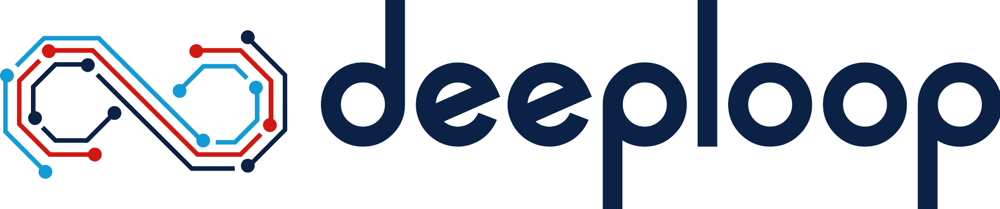

Experience & Education
My Professional & Academic Journey
Engineering Intern
Jan 2025 – Present
Responsibilities
- Currently interning at King Machine, where I am developing an automated file management system using Python to streamline organizational workflows and optimize memory usage, reducing storage requirements (e.g., cutting 1TB of excess data).
- The system also automates notifications, minimizing manual effort for employees and improving overall efficiency.
- Integrating the workflow with Git, using a bare repository for seamless version control.
- This project aims to enhance both operational productivity and data management, focusing on scalable solutions for better workflow automation and memory optimization.
Engineering Intern
Oct 2023 – Jan 2025
Responsibilities
- Developed a commissioning application using R Shiny for the front end and MongoDB for the backend, deploying it on shinyapps.io to enhance operational efficiency.
- Followed the Agile SDLC methodology, ensuring iterative progress through regular feedback and continuous improvements.
- Implemented interactive features and real-time data management to streamline commissioning tasks and enhance user experience.
- Analyzed and optimized the utilization of facilities equipment such as boilers, coolers, and AHUs, contributing to improved resource management.
- Leveraged HTML, CSS, JavaScript, and R Shiny to develop a cost-effective solution, reducing operational costs by 50%.
Senior Data Analyst
Jan 2022 – Jun 2023
Responsibilities
- Developed an automated real-time data analysis system using R, BigQuery (GCP), and ClickHouse, reducing analysis time and incorporating Intelligent Dynamic Recommendations.
- Implemented customized alerts and reports sent via Slack and email to enhance monitoring and decision-making.
- Designed and implemented ETL pipelines for seamless daily updates to BigQuery.
- Developed a Golang-based server using the Echo framework to automate R and Python processes efficiently.
- Deployed by containerizing the solution using Docker, Jenkins, GCP, and AWS ECR for scalability and streamlined deployment.
- Integrated a Process Tracker for scheduled tasks, automated email reporting, and backend issue resolution alerts.
- Optimized infrastructure efficiency, achieving an 80% reduction in infrastructure costs.
Machine Learning Engineer
Jul 2021 – Dec 2021
Responsibilities
- Developed a Business Genie model using Computer Vision and Deep Learning, achieving 81% accuracy in real-time employee and customer movement tracking, including person tracking and automated entry-exit record updates in the store's database.
- Deployed the model as part of a Django application on AWS Lambda, reducing processing time by 40% and ensuring scalable, efficient cloud-based operations.
- Developed a customer hotspot identification model, enhancing the accuracy of engagement zone detection and optimizing store layout based on foot traffic analysis.
- Designed a Deep Learning model for skin cancer detection with 83% accuracy, contributing to AI-driven healthcare solutions for early diagnosis and improved patient care.
Master’s in Computer Engineering
Aug 2023 – May 2025
Bachelor’s in Electronics & Communication Engineering
JNTU Hyderabad
Jul 2017 – Aug 2021